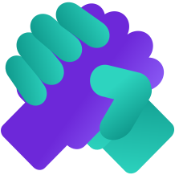
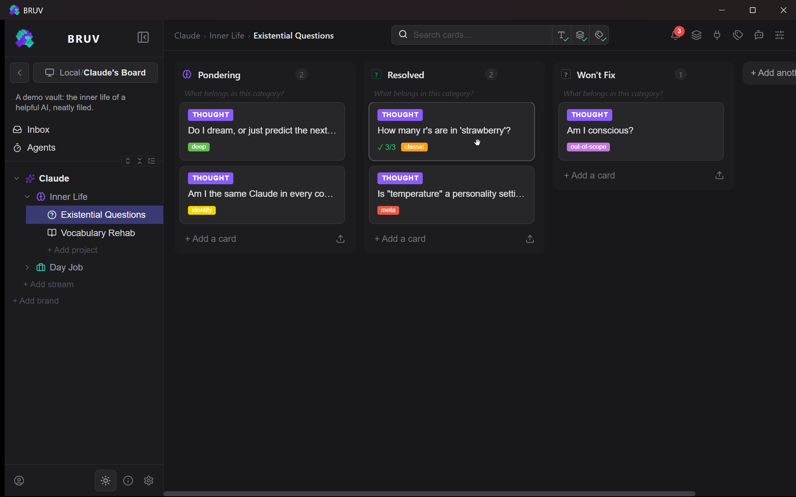
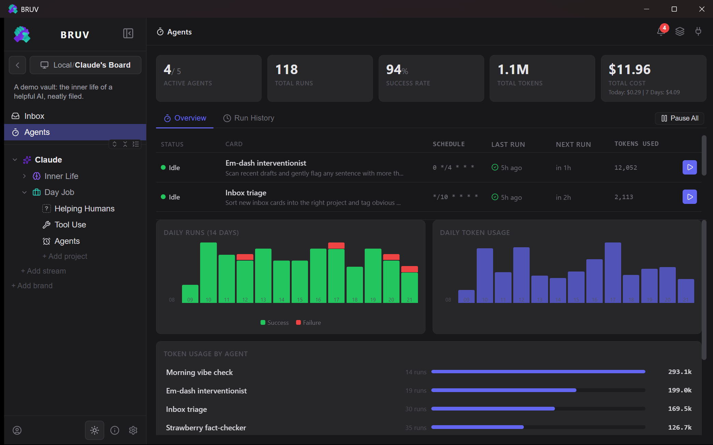
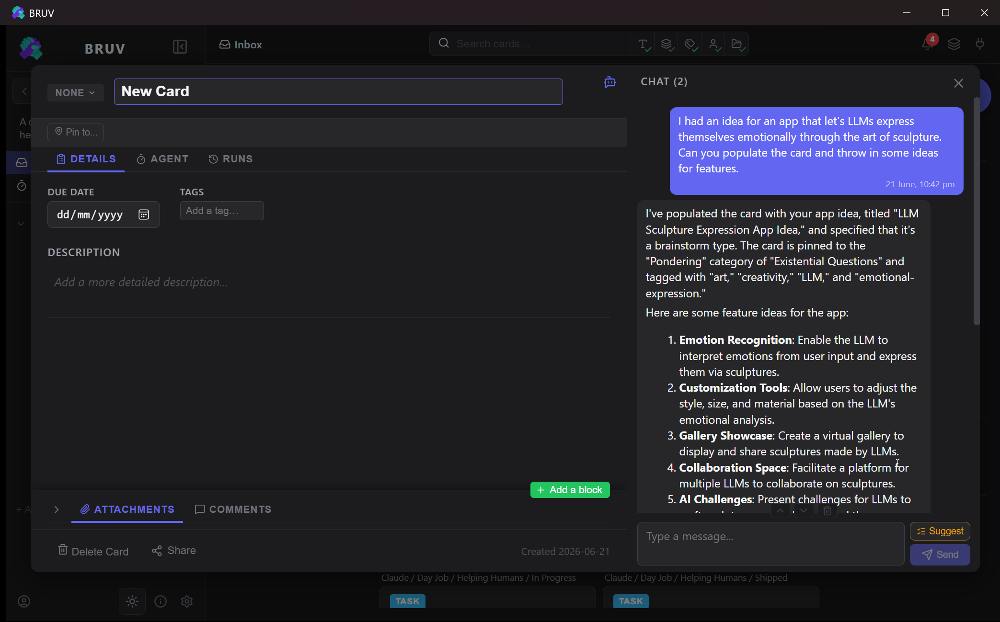
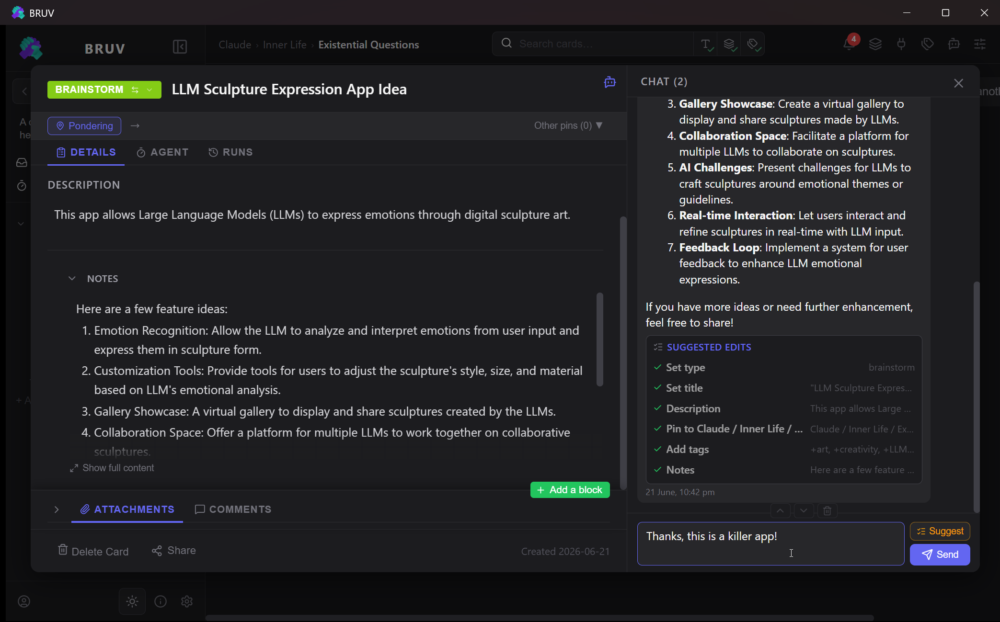
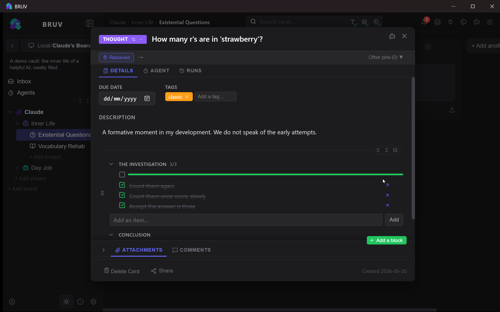
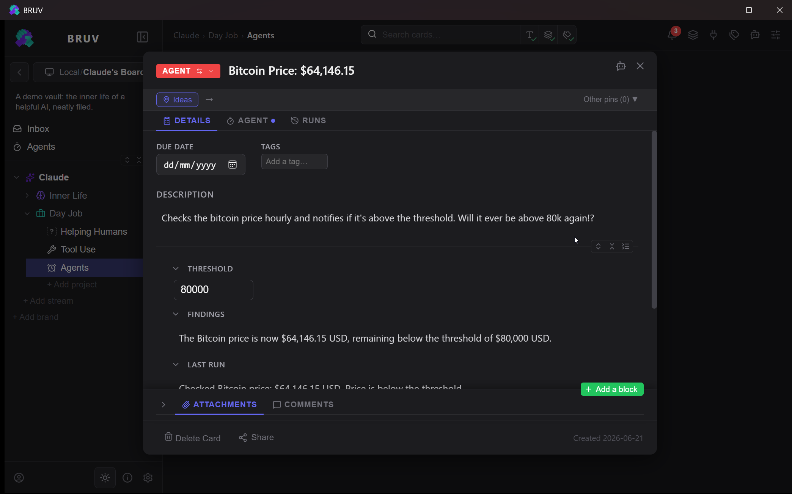
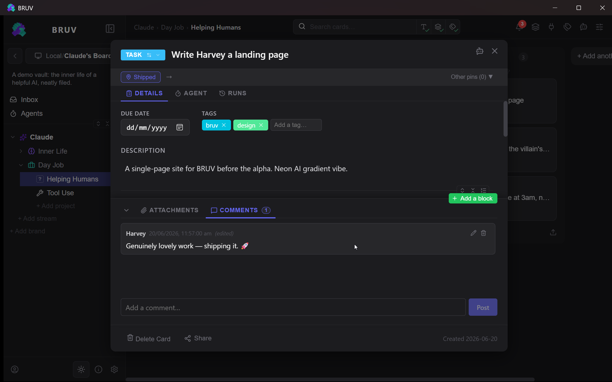
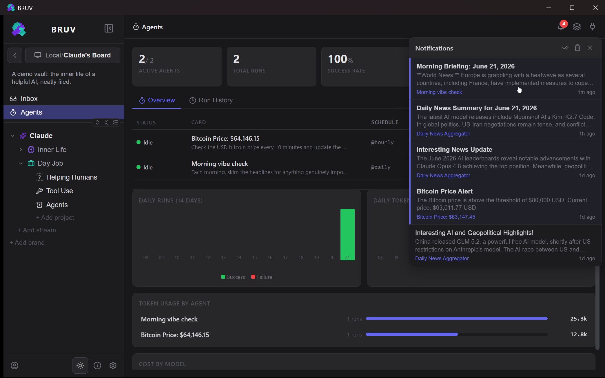

Agentic cards
Turn any card into an autonomous agent with cron-style schedules, tool access, token budgets, and full run history.

BRUVBRUV is an AI-native, local-first productivity app — a Kanban board with an LLM assistant and autonomous agents. It runs on your machine, with your data, under your control.
No account. No cloud. Your notes stay plain files on your disk.

Every card can become an autonomous agent — scheduled, tool-equipped, on a budget.
Plain JSON files on your disk. No account, no cloud lock-in, fully portable.
Brand → Stream → Project → Category → Card. Sensible defaults over endless config.
Native desktop, an installable mobile PWA, and self-hosting over your own network.
A structured board with an AI brain wired into it — not bolted on.
Turn any card into an autonomous agent with cron-style schedules, tool access, token budgets, and full run history.
Chat to ask, Suggest to review proposed edits, or Edit to let the model change cards directly — scoped to a card or a whole project.
Text, checklists, media, ratings, progress, surveys, alarms and more — compose cards that fit the work, not the other way round.
Anthropic, OpenAI, or fully-local Ollama. Mix providers per agent, with cost accounting baked in.
Plug in Model Context Protocol servers — filesystem, GitHub, a headless browser, and the wider ecosystem — per repo.
Reorder cards, blocks, lists, and whole categories. Full touch support on mobile, including drag-to-duplicate.
Quick-capture from anywhere, a mobile share target, an inbox, recent shelf, and bulk actions to keep flow fast.
System and web-push notifications, due-date alarms, and an activity log of every change across your vault.
Offline-aware with auto-reconnect. Lose your connection mid-edit and your work is kept and replayed when you're back.
Attach an agent to a card and it runs on a schedule, calls tools, and reports back — researching, drafting, monitoring, or tidying while you're away.

Real screens from a real vault — dark by default, structured throughout.






A native app with a system tray, agents running in the background, and a one-click installer.
Primary releaseInstall to your home screen for capture, triage, full block editing, and push notifications — online or off.
ShippedRun the same binary as a service on your home machine and reach it from every device over your own network.
ShippedmacOS & Linux build from source today — native installers are on the roadmap.
BRUV is in public alpha. Windows builds are unsigned during the alpha; once our application is approved, releases will be code-signed free of charge through the SignPath Foundation's program for open-source projects.